01
GAME IDEA
Kai là chiến binh trẻ sống sót sau khi quê hương bị sinh vật Void tàn phá. Cậu lên đường thu hồi các Element Core đã bị chiếm giữ và tìm ra thế lực đứng sau thảm họa.
Một chiến binh sống sót sau thảm họa phải thu hồi 10 Element Core bị Void chiếm giữ, làm chủ sức mạnh của từng hệ và tiến vào The Abyss để đối đầu nguồn gốc của sự tha hóa.
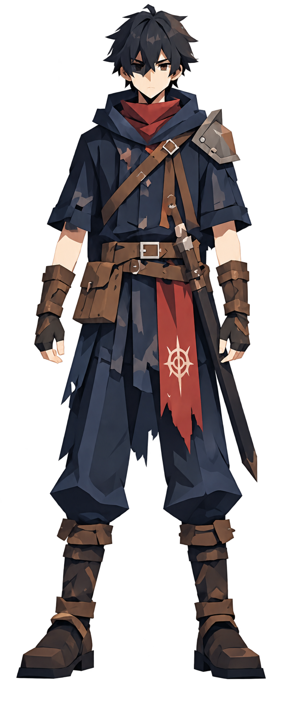
VOID WARRIOR kết hợp chiến đấu cận chiến, khám phá thế giới và phát triển sức mạnh nguyên tố. Theo chân Kai qua thảm họa quê hương, hành trình thu hồi Element Core và cuộc đối đầu với Void.
Kai là chiến binh trẻ sống sót sau khi quê hương bị sinh vật Void tàn phá. Cậu lên đường thu hồi các Element Core đã bị chiếm giữ và tìm ra thế lực đứng sau thảm họa.
2D Action / Action RPG / Dark Fantasy
Combat · Combo · Exploration · Element Skills · Progression · Boss Battle.
Hướng tới người chơi 13–35 tuổi yêu thích game hành động, đối kháng, võ thuật, fantasy, nâng cấp nhân vật và khám phá cốt truyện qua chiến đấu.
Di chuyển · Đấm · Đá · Né · Đỡ · Counter · Combo · Vũ khí · Element Skill · Void Skill.
Explore → Combat → Defeat Boss → Element Core → Unlock Skill → Upgrade → Next Region.
Combo nhanh, né/đỡ/phản công, đổi hệ theo kẻ địch và dùng Void Mode ở thời điểm quyết định.
EXP · Trang bị · Kỹ năng mới · Element Core · Khu vực mới · Boss mạnh hơn.
Kai, một chiến binh trẻ được người thầy truyền dạy võ thuật và kiếm thuật, sống tại ngôi làng miền núi yên bình. Một ngày, bầu trời xuất hiện vết nứt và sinh vật Void tràn xuống. Ngôi làng bị tàn phá; dù cố chiến đấu, Kai vẫn không thể bảo vệ quê hương. Giữa tro tàn, cậu nhặt lại thanh kiếm của người thầy và quyết tâm tìm ra nguồn gốc của thảm họa.
Trên hành trình, Kai phát hiện mình có thể hấp thụ và đồng bộ với Element Core. Cậu đi qua các vùng đất bị Void chiếm giữ, chiến đấu với quái vật và những kẻ canh giữ đã bị tha hóa để thu hồi sức mạnh của mười hệ: Mộc, Hỏa, Thủy, Lôi, Băng, Phong, Kim, Thổ, Quang và Ảnh. Mỗi Core mở ra kỹ năng mới, đồng thời đưa Kai đến gần hơn với bí mật của Void.
Kai cũng có thể sử dụng Void Energy, nhưng sức mạnh này mang nguy cơ khiến chính cậu bị tha hóa. Động lực trả thù dần trở thành mong muốn khôi phục cân bằng và bảo vệ những vùng đất còn lại. Khi thu hồi đủ sức mạnh nguyên tố, Kai tiến vào The Abyss để đối đầu nguồn gốc Void và ngăn thảm họa tiếp tục lan rộng.
VOID WARRIOR / 2D ACTION RPG
Một thế giới tan vỡ, những khối hình rõ nét và nguồn năng lượng tím đang xâm chiếm mọi thứ.
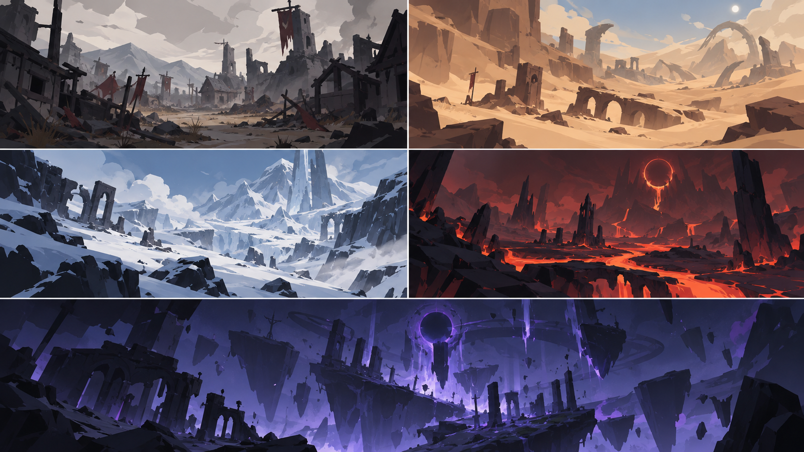
Làng đổ nát gợi mất mát; sa mạc khô cằn, băng lạnh, lava nóng và Void siêu thực tạo nhịp thay đổi giữa các vùng. Giữ kiến trúc thành từng khối lớn, giảm chi tiết nhỏ ở hậu cảnh.
Nguồn: tài nguyên VOID WARRIOR ↗Kai: dáng gọn, trang phục chia mảng rõ, khăn đỏ làm điểm nhận diện. Khi phát triển bản vẽ mới, giữ silhouette dễ đọc và tiết chế nếp vải, phụ kiện.
Nguồn: tài nguyên VOID WARRIOR ↗
Kael: giáp góc cạnh, vai rộng, khối nặng đối lập với Kai. Tím Void tập trung ở đầu, tay và khe giáp; hiệu ứng cần làm rõ hướng tấn công.
Nguồn: tài nguyên VOID WARRIOR ↗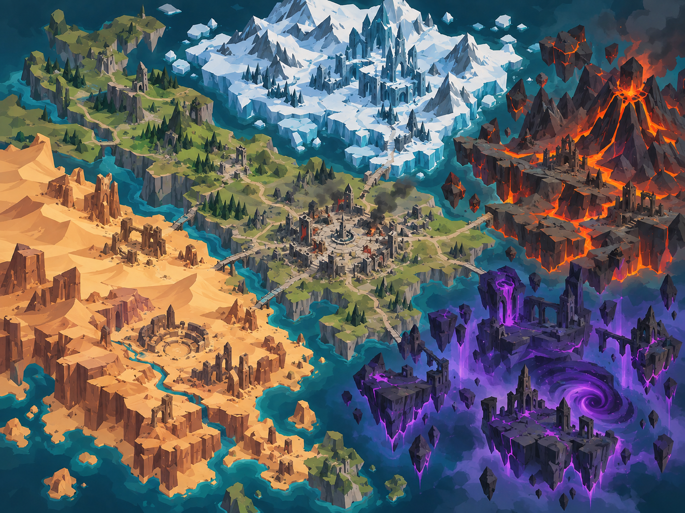
Mỗi vùng có một họ màu riêng để dễ nhận diện. Đây là tham khảo phân vùng và màu sắc; màn chơi được bố trí theo góc nhìn ngang 2D.
Nguồn: tài nguyên VOID WARRIOR ↗Bảng màu định hướng đề xuất; từng vùng có thể bổ sung màu riêng. Phân biệt tím năng lượng Void, xanh giao diện và đỏ nhận diện Kai.
#0B0D14Nền và silhouette#343B4DĐá, giáp, tàn tích#8F45FFNăng lượng và hiểm họa#36A8FFGiao diện và chỉ dẫn#A64238Điểm nhận diện Kai#D7C9AFĐất, vải và vùng sángNhân vật chính có silhouette gọn; quái dùng tam giác, gai và khối bất đối xứng. Dùng 2–3 cấp độ sáng tối trên mỗi bộ phận để thuận tiện vẽ lại và dựng chuyển động.
Giữ nền tối vừa đủ để đọc địa hình. Dùng ánh viền tím gần nguồn Void; vùng sáng tập trung ở nhân vật, đòn đánh và mục tiêu. Hiệu ứng không che cơ thể hay đường đi.
Đá chia mặt lớn; vải có ít nếp gấp; kim loại nhấn cạnh sáng. Năng lượng Void tạo mảng tím sắc, sáng ở lõi. Giảm hạt nhiễu và vết xước nhỏ để các tài nguyên cùng phong cách.
Nhìn ngang, tách rõ nền xa – trung cảnh – mặt đất. Mặt đất chiếm khoảng 20% khung làm điểm khởi đầu khi thiết kế; điều chỉnh theo màn chơi. Vùng chiến đấu cần đủ trống để đọc combo và né đòn.
Hoang tàn → Áp lực → Phản kháng → Hy vọng.
Bảng sử dụng bốn ảnh hiện có trong thư mục assets của dự án; mỗi ảnh có liên kết nguồn bên dưới. Bảng màu và các nguyên tắc tạo hình là định hướng đề xuất cho VOID WARRIOR.
Thế giới VOID WARRIOR mang cảm hứng Dark Fantasy và võ thuật Á Đông. Những vùng đất của con người, đền cổ, thành đá, rừng sâu và khu vực nguyên tố từng cùng tồn tại trong một trật tự ổn định.
Void — nguồn năng lượng cổ đại từng bị phong ấn — đã thức tỉnh và xâm chiếm từng vùng, bẻ cong hệ sinh thái, sinh vật và chính sức mạnh nguyên tố.
Void từng bị phong ấn sau thất bại của nền văn minh cổ. Khi phong ấn suy yếu, Kael bị tha hóa và dẫn lực lượng Void xâm chiếm thế giới.
Thời đại giả tưởng tiền công nghiệp: nhà gỗ, thành đá, đền cổ và vũ khí rèn. Võ thuật, kiếm thuật và nghi lễ nguyên tố được truyền qua nhiều thế hệ.
Mười Core duy trì cân bằng trong năm vùng lớn, mỗi vùng gồm nhiều khu vực nhỏ. Void là năng lượng tha hóa, không phải hệ nguyên tố thứ mười một.
Mở đầu: từ đêm ngôi làng bị tấn công đến rạng sáng hôm sau.
Hồi phục, dây leo, khống chế và sức sống.
Sát thương bộc phát, thiêu đốt và áp lực.
Uyển chuyển, phản đòn và kiểm soát nhịp đánh.
Tốc độ, stun và chuỗi combo điện.
Đóng băng, làm chậm và tạo gai băng.
Dash, né tránh và chiến đấu trên không.
Tăng giáp, cường hóa vũ khí và phá phòng thủ.
Chống chịu, chấn động và phòng thủ vững chắc.
Thanh tẩy Void, phá phong ấn và bảo hộ.
Ẩn thân, phân thân và chuyển vị trong bóng tối.
Không phải nguyên tố tự nhiên. Nó hấp thụ, bẻ cong và tha hóa mọi hệ.
Mỗi vùng lớn gồm các khu vực nguyên tố với địa hình, quái vật và Guardian/Boss riêng.
Kai chiến đấu với sinh vật Void hoặc Guardian bị tha hóa để lấy lại Element Core.
Mỗi Core đồng bộ với Kai và mở ra kỹ năng mới, combo mới cùng đường đi mới trên bản đồ.
Người chơi đổi hệ theo tình huống, tận dụng ưu thế trước từng loại quái và Boss.
Void có thể biến Hỏa thành Void Flame, Mộc thành Corrupted Forest, Băng thành Black Ice…
Kai phải đồng bộ đủ 10 Element Core để mở lối vào trung tâm The Abyss, đối đầu Kael và tái lập phong ấn.
Nhà gỗ, đường đá và rừng; nay thành tàn tích. Quê hương Kai, nơi mở đầu câu chuyện và học chiến đấu.
Cát, vách đá và thành cổ. Khám phá dấu tích nền văn minh cũ, vượt bẫy và đối đầu quái có giáp.
Núi tuyết, hang và hồ đóng băng. Tạo cảm giác cô độc; thử thách di chuyển và xử lý hiệu ứng làm chậm.
Đá núi lửa, lò rèn bỏ hoang và khe dung nham. Tăng áp lực chiến đấu, thử thách khả năng tự chủ của Kai.
Đá lơ lửng, kiến trúc đứt gãy và năng lượng tím. Trung tâm phong ấn, nơi đối đầu Kael.
PvE: khám phá thế giới, thu hồi Core và tiến triển cốt truyện.
PvP: đối kháng riêng với chỉ số chuẩn hóa; kết quả không thay đổi cốt truyện.
Hình ảnh: 2D nhìn ngang, khối hình rõ, tông tối và năng lượng Void tím.
Kai, 19 tuổi, sinh ra tại một ngôi làng miền núi có truyền thống võ thuật lâu đời. Từ nhỏ cậu được người thầy huấn luyện kiếm thuật và võ thuật, nhưng chưa từng nghĩ mình sẽ trở thành một chiến binh thực sự.
Đêm Void xâm chiếm, Kai không đủ mạnh để bảo vệ quê hương. Khi tỉnh lại giữa tro tàn, cậu mang theo thanh kiếm của người thầy và phát hiện cơ thể mình có khả năng hấp thụ — đồng bộ với những nguồn năng lượng mà người bình thường không thể kiểm soát.
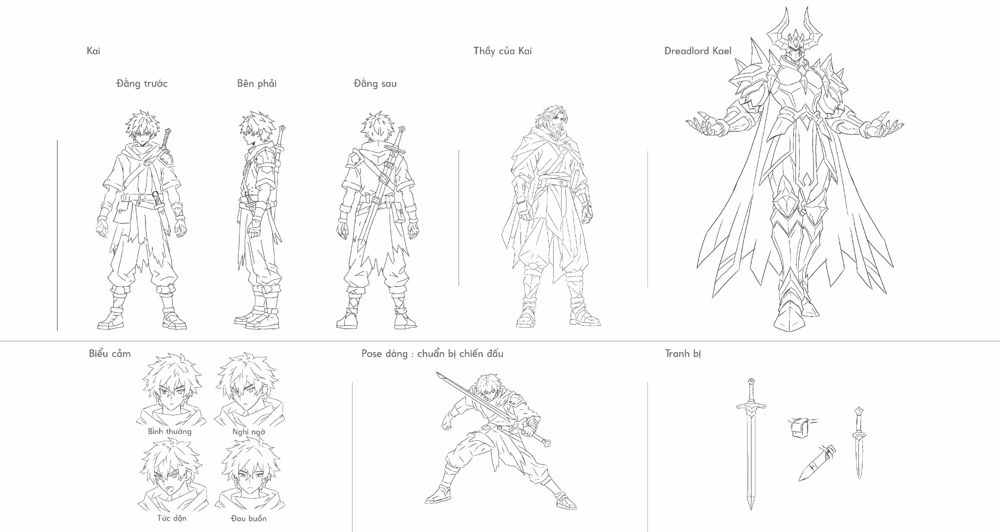
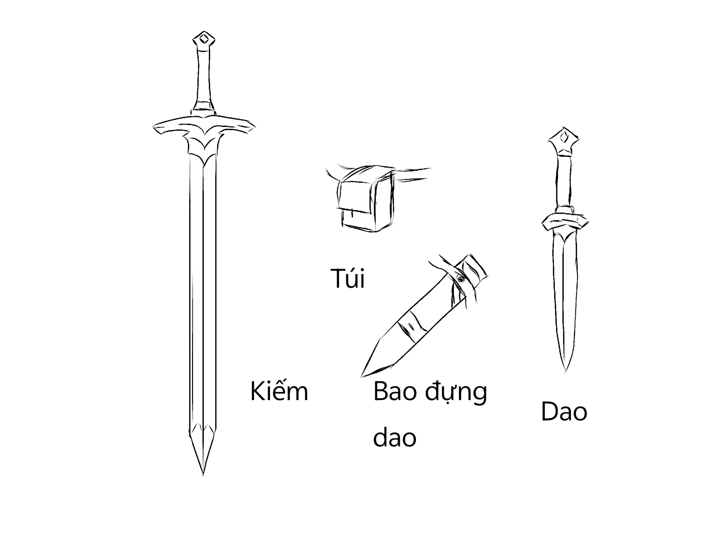
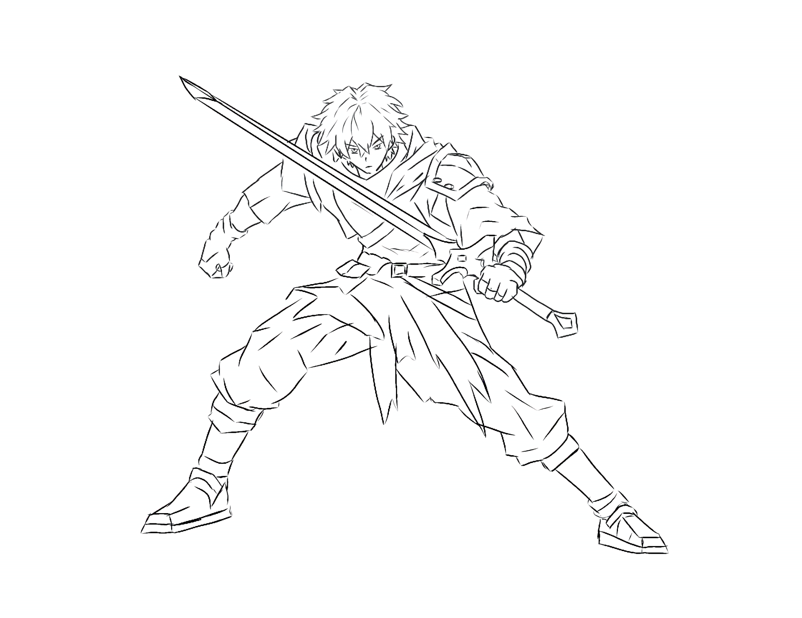
Bấm từng ảnh để xem kích thước đầy đủ.
Hồ sơ kịch bản đề xuất: người thầy chưa có tên riêng; Kael được chọn làm đối thủ cuối để thống nhất tuyến truyện.
Storyboard mở đầu game 2D: logo → thảm họa ở làng → trận chiến đầu tiên → lời thề → sảnh game. Bấm ảnh để xem lớn; mở phần chi tiết bên dưới mỗi trang để xem ghi chú từng shot.
Cinematic và demo giao diện trong bản dựng dài tổng cộng 240 giây; không tính thời gian người chơi dừng ở menu. Thời lượng chuyển cảnh đã nằm trong từng shot. Thoại và hướng máy là đề xuất dựng từ hình hiện có.
EWS: toàn cảnh rộng · WS: toàn cảnh · MS: trung cảnh · MCU: trung cận · CU: cận cảnh · ECU: đặc tả. Static: máy tĩnh · Pan: lia ngang · Tilt: lia dọc · Tracking: máy di chuyển theo chủ thể · Push in / Pull back: tiến vào / lùi ra · VO: lời ngoài hình · SFX: hiệu ứng âm thanh.
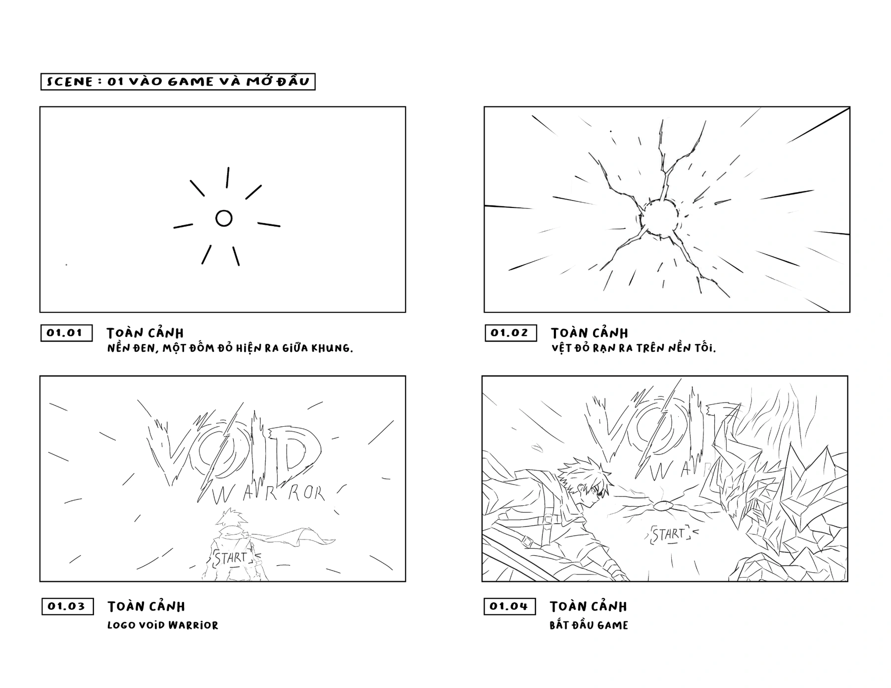
Điểm sáng xuất hiện trên nền đen, vết nứt lan rộng rồi hé lộ logo VOID WARRIOR. Màn hình bắt đầu game hiện Kai ở bên trái đối đầu quái vật bên phải cùng nút START.
Đốm sáng xuất hiện giữa nền đen.
Vết nứt tỏa ra từ điểm sáng, lan khắp khung.
Logo VOID WARRIOR hiện ra; silhouette Kai ở phía dưới.
Màn hình START: Kai bên trái, quái bên phải. Mô phỏng thao tác bắt đầu.
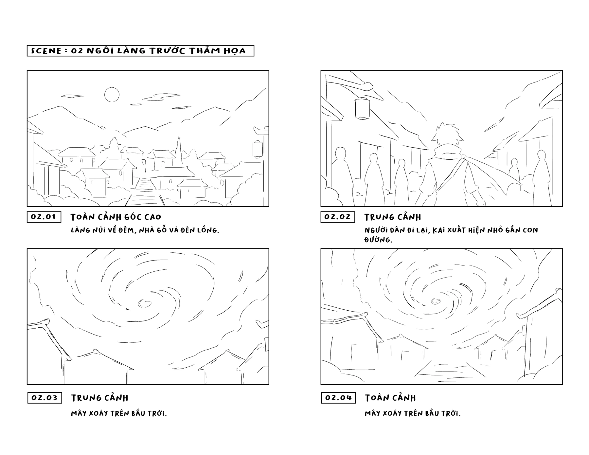
Ngôi làng yên bình với nhịp sống thường ngày. Mây xoáy và bầu trời sầm lại báo hiệu hiểm họa.
Toàn cảnh làng miền núi về đêm; nhà gỗ, đèn lồng, không khí yên bình.
Kai bước trên đường giữa người dân; giới thiệu nhịp sống thường ngày.
Mây bắt đầu xoáy phía trên mái nhà.
Vòng xoáy mở rộng, phủ lên cả đường làng.
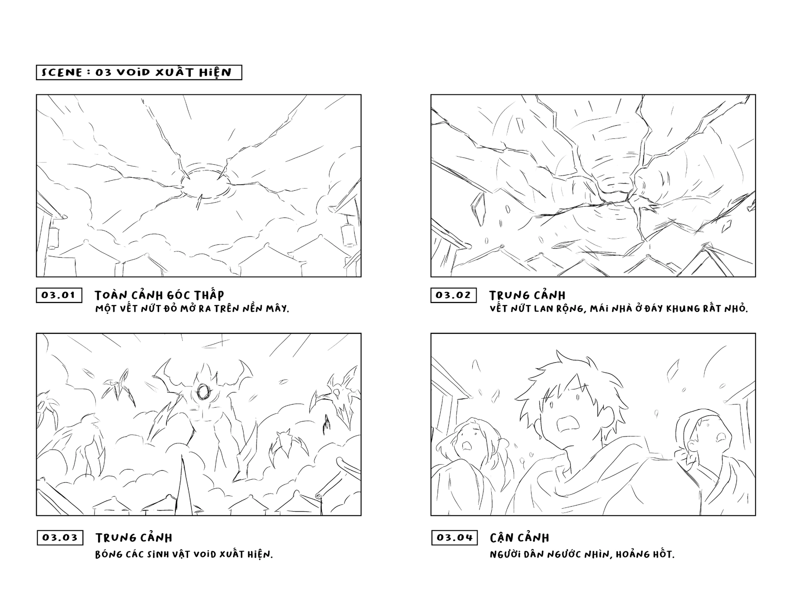
Vết nứt lan rộng giữa bầu trời, năng lượng Void tràn xuống. Sinh vật Void xuất hiện khiến người dân hoảng sợ.
Khi lên màu: vết nứt và năng lượng dùng tím Void, thống nhất Moodboard; chữ “đỏ” trên phác thảo là ghi chú cũ.
Vết nứt mở giữa tâm mây xoáy.
Vết nứt lan rộng; những mảnh năng lượng tách ra.
Bóng sinh vật Void hiện trong làn khói trên mái nhà.
Kai và người dân ngước nhìn, hoảng hốt.
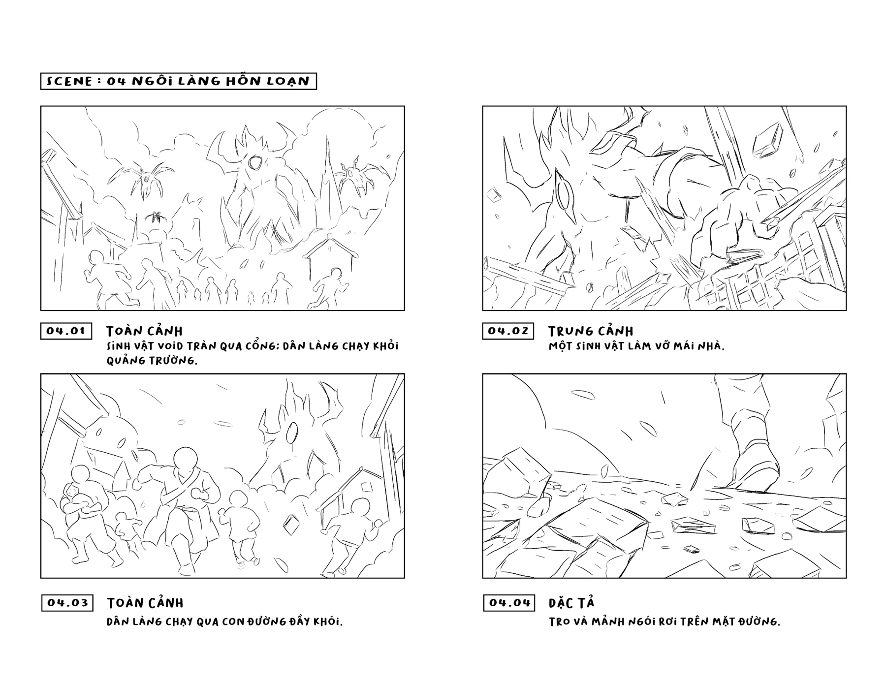
Quái vật tấn công, người dân chạy trốn. Nhà cửa đổ sập, khói lửa và tàn tích phủ khắp ngôi làng.
Sinh vật Void tràn xuống; dân làng chạy khỏi quảng trường.
Một sinh vật phá vỡ mái nhà; mảnh gỗ và ngói văng xuống.
Người dân chạy qua con đường đầy khói, tránh các mảnh vỡ.
Tro và ngói rơi; bàn chân chạy qua tiền cảnh.
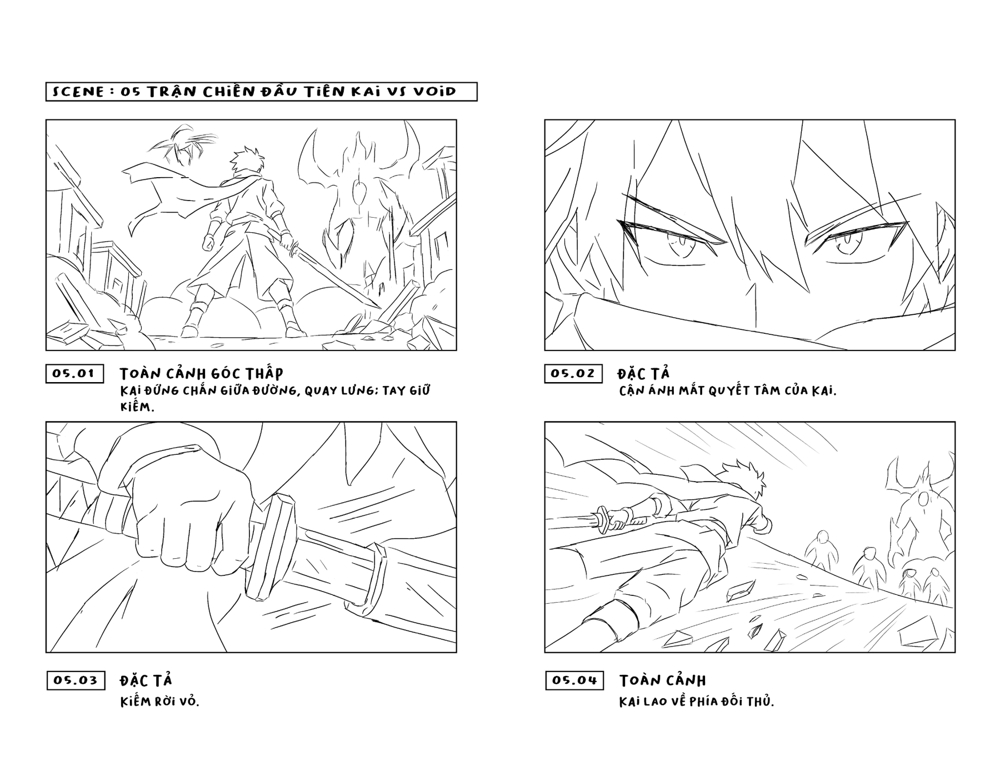
Kai chặn đường quái vật, tập trung ánh mắt, rút kiếm và lao tới đối thủ.
Kai đứng chặn đường, tay giữ kiếm, đối diện quái vật.
Đôi mắt Kai tập trung, chuyển từ sợ hãi sang quyết tâm.
Kai siết chuôi, rút kiếm khỏi vỏ.
Kai lao tới đối thủ; giữ hướng tiến từ trái sang phải.
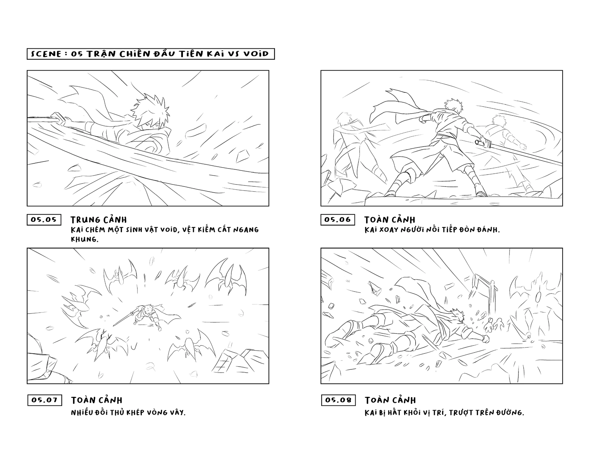
Kai chém ngang rồi nối combo. Quái vật khép vòng vây; cậu trúng đòn, bị hất văng và trượt trên đường.
Kai chém ngang sinh vật Void; đường kiếm cắt qua khung.
Kai xoay người nối tiếp combo; các bóng lặp biểu thị chuyển động.
Các đối thủ khép vòng vây quanh Kai; cậu tìm khoảng trống.
Kai trúng đòn, bị hất văng rồi trượt trên đường.
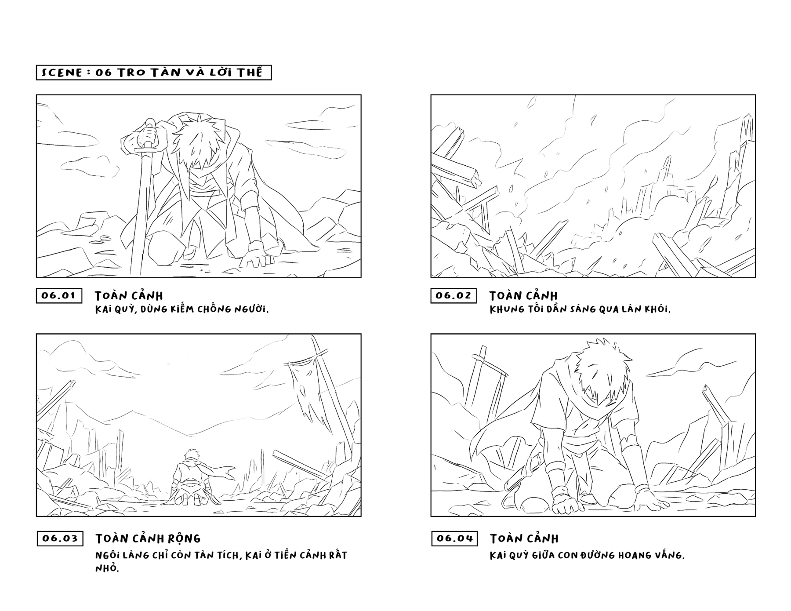
Kai quỳ chống kiếm giữa khói bụi. Khi trời dần sáng, ngôi làng chỉ còn tàn tích; cậu cúi đầu giữa con đường hoang vắng.
Kai quỳ, chống kiếm để giữ người sau trận đánh.
Khói mỏng dần, để lộ nhà cửa tan hoang trong ánh rạng sáng.
Kai nhỏ bé giữa ngôi làng chỉ còn tàn tích.
Kai cúi đầu giữa đường, bàn tay chạm đất.
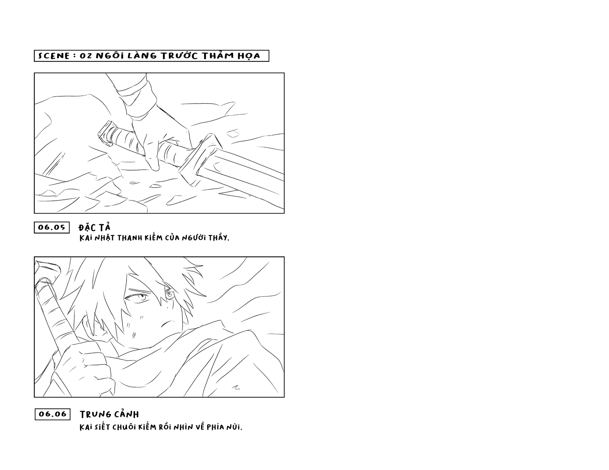
Kai nhặt thanh kiếm của người thầy, siết chuôi kiếm và nhìn về phía núi, nói lời thề bắt đầu hành trình.
Đính chính bản vẽ: tiêu đề trên ảnh ghi nhầm Scene 02. Trang này thuộc Scene 06 — Tro tàn và lời thề, shot 06.05–06.06.
Kai nhặt thanh kiếm của người thầy từ mặt đất.
Kai siết chuôi kiếm, nhìn về phía núi và quyết định lên đường.
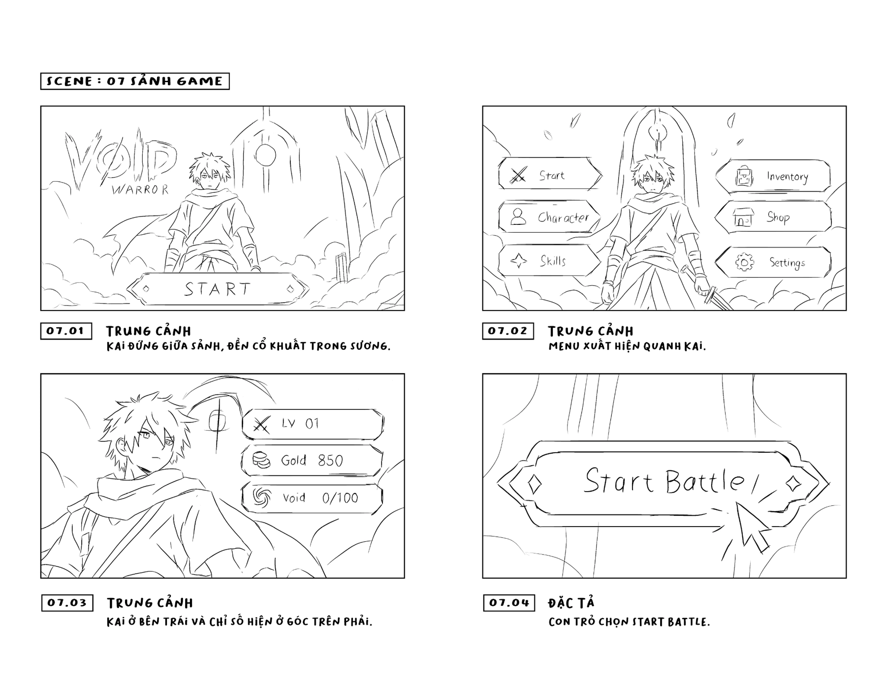
Kai xuất hiện ở màn hình START. Người chơi mở menu, kiểm tra chỉ số nhân vật và chọn START BATTLE.
Kai đứng giữa sảnh; đền cổ và sương ở phía sau.
Menu hiện quanh Kai: nhân vật, kỹ năng, túi đồ, cửa hàng, cài đặt.
Mở thông tin nhân vật: cấp độ, Gold và thanh Void.
Chọn START BATTLE để chuyển tới lựa chọn PvE / PvP; bản mở đầu dẫn vào PvE.
Màn hình bắt đầu → Sảnh → PvE → Chọn màn → Chọn độ khó → Vượt địa hình và đánh quái → Boss → Kết quả.
Thắng: nhận thưởng và mở khóa màn tiếp theo. Thua: chơi lại hoặc về sảnh.
Màn hình bắt đầu → Sảnh → PvP → Ghép đối thủ → Đấu trường 2D 1v1 → Kết quả → Tái đấu hoặc về sảnh.
Đấu trường tách khỏi diễn biến cốt truyện PvE. Nếu ghép trận thất bại, người chơi có thể thử lại hoặc về sảnh.
Có 2 chế độ: PvE và PvP.
PvE — Người chơi đấu với môi trường: Điều khiển Kai vượt địa hình, đánh quái và boss theo cốt truyện; thu hồi Element Core và mở khóa vùng mới.
PvP — Người chơi đấu với người chơi: Đấu đối kháng 1 đấu 1 trên đấu trường 2D. Hai bên sử dụng bộ chỉ số chuẩn hóa; chiến thắng phụ thuộc vào combo, né đòn và thời điểm dùng kỹ năng.
Có 3 cấp độ: Dễ, Trung bình, Khó.
Độ khó áp dụng cho PvE, thay đổi số lượng quái, sát thương và hành vi của kẻ địch. PvP không dùng lựa chọn Dễ/Trung bình/Khó.
Di chuyển & nhảy: Người chơi điều khiển Kai chạy, nhảy, dash và vượt địa hình theo dạng side-scrolling 2D.
Chiến đấu: Kai dùng kiếm để tấn công, tạo combo, né đòn và phản công quái vật Void trên đường đi.
Thanh Void: Được nạp khi chiến đấu và thu thập năng lượng. Khi đầy, người chơi có thể kích hoạt Void Mode.
Void Mode: Tăng sức mạnh, tốc độ và mở đòn kết liễu mạnh hơn khi đối đầu với quái mạnh hoặc boss.
PvE: chọn màn và độ khó; hoàn thành màn để mở khóa màn tiếp theo. Sau mỗi boss, người chơi nhận EXP, Gold và kỹ năng mới. PvP: ghép đối thủ → vào đấu trường → thi đấu → hiển thị thắng/thua → tái đấu hoặc về sảnh; tiến trình PvE không tạo lợi thế chỉ số trong PvP.
Outline dưới đây bao quát toàn bộ cốt truyện PvE. PvP là đấu trường độc lập, không làm thay đổi kết thúc câu chuyện. Đây là hướng kịch bản đề xuất để phát triển tiếp.
Kai sống tại làng miền núi và học kiếm thuật từ người thầy. Lời dạy cốt lõi: sức mạnh chỉ có ý nghĩa khi người sử dụng còn tự chủ. Bầu trời nứt mở; sinh vật Void tấn công, phá hủy làng và người thầy ngã xuống khi bảo vệ dân làng.
Kai tỉnh lại giữa tro tàn, nhận thanh kiếm của người thầy. Dấu ấn trên cơ thể phản ứng với năng lượng Void. Cậu lựa chọn rời làng để tìm nguồn gốc thảm họa và thu hồi các Core đã bị chiếm giữ.
Câu hỏi: Kai có thể trả thù mà không trở thành kẻ phá hủy?
Kai vượt qua các vùng nguyên tố, đánh bại quái vật và Guardian bị tha hóa. Mỗi Element Core mở ra kỹ năng và con đường mới. Lạm dụng Void Mode khiến dấu ấn lan rộng và khả năng tự chủ suy giảm.
Midpoint: Kai biết Kael từng bảo vệ phong ấn nhưng đã dùng Void để ép thế giới vào trật tự của mình. Sau một trận chiến, Kai mất kiểm soát và suýt gây hại cho người cần cứu. Cậu nhận ra báo thù đang khiến mình lặp lại lựa chọn của Kael.
Bước ngoặt 2: Kai dừng lệ thuộc vào Void, dùng sức mạnh nguyên tố để ổn định bản thân và thu hồi Core cuối. Cậu bước vào The Abyss với mục tiêu bảo vệ thế giới.
Tại trung tâm The Abyss, Kael đề nghị Kai hợp nhất với Void để có sức mạnh tuyệt đối. Kai từ chối và giao chiến. Người chơi phối hợp kỹ năng các hệ, né combo của boss và chỉ dùng Void trong giới hạn kiểm soát.
Cao trào: khi Kael mất kiểm soát, Kai dùng mười Core tái lập phong ấn, cắt nguồn năng lượng của hắn. Kael bị đánh bại; các vùng đất dần thoát khỏi sự tha hóa.
Kết: Kai trở về nơi từng là ngôi làng, đặt thanh kiếm trước di tích của người thầy rồi cùng người sống sót bắt đầu tái thiết. Thông điệp: sức mạnh lớn nhất là khả năng lựa chọn và tự chủ.
Cinematic chuyển thể Hồi I, nối vào sảnh và gameplay. Storyboard hiện có minh họa phần mở đầu; Hồi II–III cần storyboard bổ sung nếu dựng thành phim toàn bộ câu chuyện.
| Cảnh / thời lượng | Hành động và thoại | Hình ảnh, âm thanh, chuyển cảnh |
|---|---|---|
| 01 · LOGO / START 00:00–00:15 · 15s | Điểm sáng → vết nứt → logo → màn hình START với Kai bên trái và quái bên phải. | WS đồ họa; tiếng nứt, âm nhấn logo, SFX xác nhận. Shot 01.01–01.04. |
| 02 · NGOẠI. LÀNG MIỀN NÚI — ĐÊM 00:15–00:50 · 35s | Kai đi giữa làng yên bình. Lời người thầy vang trong ký ức: “Sức mạnh chỉ có ý nghĩa khi con còn tự chủ.” Mây bắt đầu xoáy phía trên mái nhà. | EWS làng → MS Kai → bầu trời. Tiếng dân làng và nhạc nhẹ chuyển thành gió rít. Shot 02.01–02.04. |
| 03 · NGOẠI. BẦU TRỜI / LÀNG — ĐÊM 00:50–01:20 · 30s | Vết nứt mở rộng; bóng sinh vật Void xuất hiện. Kai và dân làng ngước nhìn kinh hãi. Dân làng: “Cái gì thế?” | Góc thấp nhìn Void → CU phản ứng. Tiếng rạn vỡ, gầm và nhạc căng thẳng. Shot 03.01–03.04. |
| 04 · NGOẠI. ĐƯỜNG LÀNG — TIẾP DIỄN 01:20–01:55 · 35s | Quái tấn công, phá mái nhà. Dân làng chạy qua khói và ngói vỡ. Tiếng hô: “Chạy đi!” | WS đám đông → MS mái nhà → ECU mặt đường. Nhịp cut nhanh, tiếng gỗ gãy và bước chân. Shot 04.01–04.04. |
| 05 · NGOẠI. GIỮA TÀN TÍCH — ĐÊM 01:55–02:55 · 60s | Kai chặn đường, rút kiếm, lao tới chém và nối combo. Quái khép vòng vây, đánh bật cậu; Kai trượt trên đường. | Đặc tả mắt/tay xen toàn cảnh chiến đấu; tracking ngang. Nhạc dồn rồi ngắt khi Kai ngã. Shot 05.01–05.08. |
| 06 · NGOẠI. LÀNG ĐỔ NÁT — RẠNG SÁNG 02:55–03:45 · 50s | Kai quỳ giữa tro tàn, gọi thầy nhưng không có tiếng đáp. Cậu nhặt kiếm của thầy, nhớ lời dạy và nhìn về phía núi: “Con sẽ tìm ra nguồn gốc của nó… Không nơi nào phải chịu cảnh này nữa.” | Khoảng lặng trên EWS tàn tích; ECU kiếm → MCU Kai. Gió, nhạc buồn rồi kiên định. Shot 06.01–06.06. |
| 07 · SẢNH GAME / DEMO GIAO DIỆN 03:45–04:00 · 15s | Chuyển sang Kai ở sảnh; menu và thông tin hiện ra. Chọn START BATTLE để tới lựa chọn PvE/PvP, tiếp tục cốt truyện qua PvE. | Máy tĩnh, SFX giao diện, nhạc chủ đề. Màn chọn chế độ nằm sau frame cuối. Shot 07.01–07.04. |
Tổng: 240 giây (4 phút). Thời lượng là bản phân bổ dự kiến để dựng animatic; cần điều chỉnh sau khi ghép hình và thu thoại.